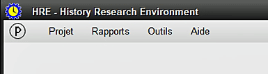
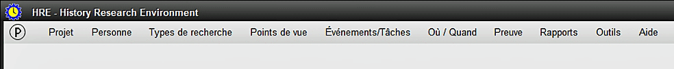

Le menu principal s'affiche au démarrage de HRE et ne comprend initialement que quelques éléments:

Si vous avez choisi de rouvrir le dernier Projet affiché, celui-ci s'ouvrira à la place, avec la barre de menu complète en vue.
Tous les éléments de menu affichés sont au moins partiellement fonctionnels à ce stade de l'exécution de HRE.
Pour voir le menu complet, un Projet doit être ouvert, à quel point le menu se transforme en:

Vous pouvez également choisir à ce moment d'importer un Project dans HRE ou d'éffectuer une série d'autres options, comme indiqué dans les Sujets Relatifs ci-dessous:
Sujets Relatifs